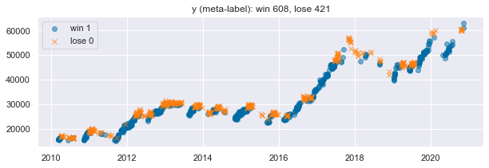

# lib
import numpy as np
import pandas as pd
import matplotlib.pyplot as plt
import seaborn as sns;sns.set()
plt.style.use('tableau-colorblind10')
# different models
from sklearn.linear_model import LogisticRegression
from sklearn.ensemble import RandomForestClassifier, GradientBoostingClassifier, AdaBoostClassifier, VotingClassifier
from sklearn.svm import SVC
from sklearn.naive_bayes import GaussianNB
from sklearn.preprocessing import StandardScaler, MinMaxScaler, normalize
from sklearn.model_selection import GridSearchCV
from sklearn.metrics import roc_auc_score, accuracy_score, f1_score, precision_score
# homemade
from feature_engineering import dimension_reduction as DR
from features import tautil
from labeling import labeling
from backtest import round_trip
from triple_barrier import make_rt
from mlutil.pkfold import PKFold머신러닝을 이용한 트레이딩: (7) 매매 신뢰도 측정과 전략 강화
Enhancing the Strategy and Bet Confidence
trading
enhancing
machine learning
전략 강화 모형
inputs
- 라벨: 매매 규칙에 따른 전략의 결과 = 각 매매 성공/실패 여부
models: SVM, Random Forest, Gradient Boosting, LSTM
outputs
- 매매 신뢰도 (bet confidence)
매매 신뢰도를 이용한 전략 강화
import warnings
warnings.filterwarnings(action='ignore')get X,y
market_df = pd.read_csv('C:data/market_samsung.csv')
market_df = market_df.rename(columns={market_df.columns[0]:'Date'})
market_df.index = pd.to_datetime(market_df.Date)
market_df.drop(columns='Date',inplace=True)
market_df.dropna(inplace=True)
close = market_df.close['2010':'2020']
feature_df = pd.read_csv('C:data/features_samsung.csv')
feature_df = feature_df.rename(columns={feature_df.columns[0]:'Date'})
feature_df.index = pd.to_datetime(feature_df.Date)
feature_df.drop(columns='Date',inplace=True)
feature_df.dropna(inplace=True)
selected_features = pd.read_csv('C:data/selected_features.csv').columns[1:]feature = feature_df.dropna()
feature = feature[selected_features]
sc = StandardScaler()
X_sc = sc.fit_transform(feature)
X_sc = pd.DataFrame(X_sc, index=feature.index, columns=feature.columns)#benchmark
barrier_bm = pd.read_csv('C:data/barrier_bm.csv')
barrier_bm.index = pd.to_datetime(barrier_bm.Date)
barrier_bm.exit = pd.to_datetime(barrier_bm.exit)
barrier_bm.drop(columns='Date',inplace=True)#labeling
barrier = pd.read_csv('C:data/barrier.csv')
barrier.index = pd.to_datetime(barrier.Date)
barrier.exit = pd.to_datetime(barrier.exit)
barrier.drop(columns='Date',inplace=True)
rts = make_rt(close,barrier.dropna())
outcome = rts.rt_returns
outcome.index = rts.open_dt#meta-label
wl = np.sign(np.sign(outcome)+1)
y_ = wl
y_.value_counts()1.0 608
0.0 421
Name: rt_returns, dtype: int64loss = wl.value_counts()[0]
win = wl.value_counts()[1]
plt.figure(figsize=(10,3))
plt.scatter(wl[wl==1].index,close.loc[wl[wl==1].index], alpha=0.5)
plt.scatter(wl[wl==0].index,close.loc[wl[wl==0].index], marker='x', alpha=0.5)
plt.legend(['win 1','lose 0'])
plt.title('y (meta-label): win {}, lose {}'.format(win,loss))
plt.show()
raw_X = X_sc.copy()
tmp = raw_X.join(y_).dropna()
X=tmp.iloc[:,:-1]
y=tmp.iloc[:,-1]Model Construction
# Choose model
# Cross Validation (k-fold)
n_cv=4
t1 = pd.to_datetime(barrier.exit.loc[X.index])
cv = PKFold(n_cv,t1,0)# Choose model (SVM-rbf)
C = [0.1, 1,10]
param_grid_rbf = dict(C=C)
svc_rbf = SVC(kernel='rbf', probability=True)
gs_svc_rbf = GridSearchCV(estimator=svc_rbf, param_grid= param_grid_rbf, cv=cv, scoring='precision')
gs_svc_rbf.fit(X,y)
svc_best = gs_svc_rbf.best_estimator_
svc_bestSVC(C=10, probability=True)n_estimators = [200,1000]
#max_depth = [3,7]
param_grid_rfc = dict(n_estimators=n_estimators)
rfc = RandomForestClassifier()
gs_rfc = GridSearchCV(estimator=rfc, param_grid= param_grid_rfc, cv=cv, scoring='precision')
gs_rfc.fit(X,y)
rfc_best = gs_rfc.best_estimator_
rfc_bestRandomForestClassifier(n_estimators=200)n_estimators_ab = [50,100]
learning_rate = [1,0.1]
param_grid_abc = dict(n_estimators=n_estimators_ab, learning_rate=learning_rate)
abc=AdaBoostClassifier()
gs_abc = GridSearchCV(estimator=abc, param_grid= param_grid_abc, cv=cv, scoring='precision')
gs_abc.fit(X,y)
ada_best = gs_abc.best_estimator_
ada_bestAdaBoostClassifier(learning_rate=1, n_estimators=100)n_estimators_gb = [100,200]
learning_rate = [0.1,0.01]
param_grid_gbc = dict(n_estimators=n_estimators_gb, learning_rate=learning_rate)
gbc=GradientBoostingClassifier()
gs_gbc = GridSearchCV(estimator=gbc, param_grid= param_grid_gbc, cv=cv, scoring='precision')
gs_gbc.fit(X,y)
gbc_best = gs_gbc.best_estimator_
gbc_bestGradientBoostingClassifier(learning_rate=0.01, n_estimators=200)Model
clf_list = [svc_best, rfc_best, ada_best, gbc_best]
estimators=['SVM_best','RF_best','AdaBoost_best','GradientBoost_best']
scores_list = []
y_preds_list = []
y_probs_list = []
# for ML model prediction
for clf in clf_list:
y_preds_ = []
y_probs_ = []
for train, test in cv.split(X, y):
clf.fit(X.iloc[train], y.iloc[train])
y_true = y.iloc[test]
y_pred = clf.predict(X.iloc[test])
y_probs = clf.predict_proba(X.iloc[test])
y_probs = y_probs[:, 1]
y_pred_series = pd.Series(y_pred,index=y[test].index)
y_probs_series = pd.Series(y_probs,index=y[test].index)
y_preds_.append(y_pred_series)
y_probs_.append(y_probs_series)
y_preds__ = pd.concat([i for i in y_preds_])
y_probs__ = pd.concat([i for i in y_probs_])
y_true__ = y.loc[y_preds__.index]
accs = accuracy_score(y_true__, y_preds__)
f1=f1_score(y_true__, y_preds__)
roc=roc_auc_score(y_true__, y_probs__)
prec=precision_score(y_true__, y_preds__)
score = [accs, f1, roc, prec]
scores_list.append(score)
y_preds_list.append(y_preds__)
y_probs_list.append(y_probs__)results = pd.DataFrame(scores_list, columns=['accuracy','f1 score','roc auc score','precision score'],index=estimators)
result_show = results.sort_values('precision score', ascending=False)result_show| accuracy | f1 score | roc auc score | precision score | |
|---|---|---|---|---|
| AdaBoost_best | 0.567541 | 0.631927 | 0.552471 | 0.635607 |
| SVM_best | 0.544218 | 0.585323 | 0.574228 | 0.632887 |
| RF_best | 0.549077 | 0.657817 | 0.537073 | 0.596257 |
| GradientBoost_best | 0.519922 | 0.609177 | 0.490364 | 0.586890 |
y_probs_df = pd.DataFrame()
for i in range(len(estimators)):
y_probs_df[estimators[i]] = y_probs_list[i]#평균
pred_prob = pd.Series(y_probs_df.mean(axis=1),index=y_probs_df.index)
#하나하나
#y_probs_df_2 = y_probs_df[estimators[3]]
#pred_prob = pd.Series(y_probs_df_2,index=y_probs_df_2.index)pred_prob2=pd.Series(normalize(pred_prob.to_frame().T).reshape(-1,), index=y_probs_df.index).rename('bet_confidence')bet_confidence=pd.Series(MinMaxScaler().fit_transform(pred_prob2.to_frame()).reshape(-1,), index=y_probs_df.index).rename('bet_confidence')plt.title('Bet confidence distribution')
plt.hist(bet_confidence, bins=30)[2]
plt.xlabel('Bet confidence')
plt.ylabel('counts')Text(0, 0.5, 'counts')c = close.loc[bet_confidence.index]
plt.figure(figsize=(10,5))
plt.title('Bet confidence')
plt.plot(close, alpha=0.1)
plt.scatter(c.index,c, c = bet_confidence, s=20,cmap='vlag',vmin=0,vmax=1)
plt.colorbar()
plt.show()Algo Trading Backtest
barrier_bm = barrier_bm.dropna()
barrier_before = barrier.loc[bet_confidence.index].dropna()
barrier_enhanced = barrier_before.loc[bet_confidence.loc[bet_confidence>0.5].index]rts_bm = make_rt(close,barrier_bm)
rts_before = make_rt(close,barrier_before)
rts_enhanced = make_rt(close,barrier_enhanced)result1 = pd.concat([round_trip.get_df_ann_sr(rts_bm,'Benchmark',years=11),
round_trip.get_df_ann_sr(rts_before,'Trading Strategy (Primary)',years=11)],axis=1)
df_sr = round_trip.get_df_ann_sr(rts_enhanced,'Enhanced Trading Strategy (Second)',years=11)
result1 = result1.join(df_sr)result1| Benchmark | Trading Strategy (Primary) | Enhanced Trading Strategy (Second) | |
|---|---|---|---|
| avg_n_bets_per_year | 246.272727 | 93.545455 | 49.636364 |
| win_ratio | 0.520506 | 0.590467 | 0.612844 |
| annualized_sharpe_ratio | 0.538232 | 1.525995 | 1.623284 |
result2 = pd.concat([round_trip.get_df_ann_sr(rts_bm,'Benchmark',years=11),
round_trip.get_df_ann_sr(rts_before,'Trading Strategy (Primary)',years=11)],axis=1)
winr = []
for i in np.linspace(0.1,0.9,9):
barrier_enhanced_ = barrier_before.loc[bet_confidence.loc[bet_confidence>=i].index]
rts_enhanced_ = make_rt(close,barrier_enhanced_)
df_sr = round_trip.get_df_ann_sr(rts_enhanced_,'b',years=11)
winr.append(df_sr.T.win_ratio[0])dict_ = dict(zip(np.linspace(0.1,0.9,9).round(2),winr))df_res = pd.DataFrame.from_dict(dict_,orient='index')
plt.figure(figsize=(10,5))
plt.title("Hit-ratio of different thresholds strategy")
plt.bar(df_res.index, df_res[0], width=0.05)
plt.plot(df_res)
plt.ylabel('win ratio')
plt.xlabel('bet confidence threshold')
plt.ylim(0.5,0.8)
plt.show()매매신뢰도의 전략 강화 결과 win ratio가 상승했으며, 신뢰도의 임계치에 따라 결과가 다른데, 임계치를 높이할수록 결과가 좋다.